Bir tür "dönüþüm
teknolojisi" olan silikon/kauçuk kalýplama sayesinde
düþük miktardaki üretimler için pahalý ve uzun süren metal
kalýp imalatý yerine bir master model kullanarak daha
ucuz ve hýzlý bir þekilde plastik parça imal edilebilir.
Bu master model autofabrication teknolojileriye elde edilen bir
model olduðunda ise kýsa sürede ve ucuza istenilen mekanik
ve optik özelliklere sahip prototipler üretilebilir.
Not:
Türkiye'de silikon kalýplama hizmeti alýnabilecek kuruluþlarýn
listesi
Türkiye'deki Uygulamalar
sayfasýnda yer almaktadýr.
Silikon kalýplama
özetle 4 aþamada gerçekleþir:
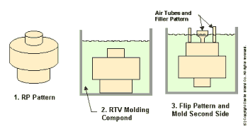
1- Master bir model
(solda) etrafýna silikon dökülerek (ortada)
oda sýcaklýðýnda veya bir fýrýnda daha yüksek sýcaklýklarda
silikonun daha hýzlý katýlaþmasý (vulkanize olmasý) saðlanýr.
Silikonda hava kabarcýðý kalmamasý için bu iþlem vakum
altýnda yapýlabilir. Model üzerine hava çýkýþ kanallarý
bu esnada baðlanýr (saðda).
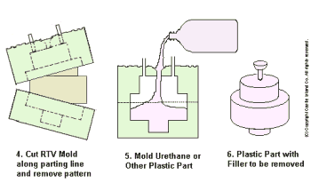
(Çizimler:
Ed Grenda, Castle Island Co.)
2- Silikon kesilerek master model çýkarýlýr (solda).
Modelin karmaþýklýðýna göre ikiden fazla silikon kalýp
parçasý oluþabilir. Yeniden silikon parçalar birleþtirilerek
kalýp boþluðu (modelin negatif geometrisi) oluþturulur.
Sývý haldeki silikonun her türlü detaya girmesi sayesinde
model üzerindeki parmak izleri kadar küçük pürüzler bile
mükemmel olarak kalýba yansýr.
3- Sývý haldeki
hammadde bu boþluða dökülür (ortada). Silikon esnek
bir malzeme olmasýna raðmen döküm çok düþük basýnçlarda
(genellikle sadece yerçekimi kuvveti altýnda) gerçekleþtiði
için kalýpta hassasiyete zarar verecek ölçüde bir esneme
veya deformasyon olmaz. Döküm sonrasý sertleþme kimyasal
reaksiyonla veya (mum model imalatý örneðinde olduðu gibi)
soðuma ile gerçekleþir. Ýkinci durumda, malzemenin erime
sýcaklýðýnýn silikona zarar vermeyecek seviyede düþük
olmasý gerekir.
4- Silikon kalýp
açýlarak parça çýkarýlýr (saðda): Silikonun esnekliði
sayesinde ters açýya sahip bile olsa silikon kalýp esnetilerek
parçadan kolaylýkla ayrýlabilir. Böylece maçalý bir metal
kalýp ile üretilecek bir parçanýn prototipi maçasýz bir
silikon kalýpla rahatlýkla üretilebilir.
Aþaðýda, bu iþlemlere ait bir animasyon görülmektedir (Kaynak: Rapid Product Solutions,
1998):
Malzeme Teknolojisi: Silikon kalýplamanýn hýzlý prototip imalat sektöründe
yaygýn olarak kullanýlmasýnýn ardýnda autofabrication teknolojileriyle
daha hýzlý ve kolay master model imalatýnýn etkisine
ek olarak, 1990'lý yýllarda önemli geliþmeler kaydedilen
iki temel malzeme teknolojisi vardýr:
1- Kalýp Malzemesi
(RTV silikon): Sývý halden katý lastik haline kýsa
sürede ve büzülme-þiþmeye uðramadan geçebilen þeffaf
silikon malzemeler. RTV (Room Temperature Vulcanizing
- oda sýcaklýðýnda vulkanize olan) silikonlar istenirse
çabuk kür olmasý için daha sýcak bir ortamda bekletilebilir.
Çift komponentli RTV silikon malzemeler kalýba döküldüðünde
yüksek akýþkanlýklarý sayesinde master model üzerine
yüksek basýnç uygulamadan modeli çevreleyerek parmak
izi gibi en küçük detaylarýn ve yüzey desenlerin kalýplanabilmesini
saðlar.
RTV silikon
malzemelerden evvel ise sadece yüksek sýcaklýkta vulkanize
olabilen kauçuk/ silikon malzemeler kullanýlýyordu.
Bu uygulamalarda, mat renkli ve macun kývamýnda olan
ham kauçuk master model etrafýna konulup basýnç ve
yaklaþýk 200 °C sýcaklýk altýnda bir süre bekletilerek
moleküller arasý çapraz
baðlama ile vulkanize olmasý saðlanýr. Bunun dezavantajý,
modelin basýnç ve sýcaklýða dayanabilecek bir mukavemette
olasý gerekliliðidir. Bir dezavantajý da þeffaf olmadýðý
için kesim sýrasýnda kalýp ayýrma noktalarýnýn tespitinin
güç olmasýdýr. Bunu yanýnda kauçuk kalýplar iki önemli
avantaja sahip olmalarý sayesinde hala uygulama alanlarý
bulabilmektedir; Bu avantajlarýn birisi kauçuk malzemenin
RTV silikona kýyasla düþük maliyeti, diðeri de vulkanize
kauçuk kalýplarýn daha esnek, mukavemetli ve sýcaklýða
dayanýmlý olmasý sayesinde daha uzun ömürlü olmasýdýr.
Yüksek sýcaklýkta vulkanize olan kauçuk kalýplar bu
avantajlarý sayesinde özellikle kuyumculuk
ve merkezkaç metal döküm uygulamalarýnda baþarýyla
kullanýlmaktadýr.
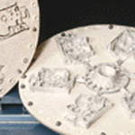Saðda:
Bu tür kauçuk kalýplarýn kullanýldýðý merkezkaç dökümde
zamak (Al ve Çinko alaþýmý) gibi düþük ergime sýcaklýklý
metallerden kemer tokasý, anahtarlýk, çanta aksesuarlarý,
hediyelik eþya vs. gibi sektörlere yönelik karmaþýk
geometrili parçalar hýzlý ve kolay bir þekilde üretilmektedir.
Ayrýca bu teknik, seri imalatý pres metal döküm ile
yapýlacak parçalarýn prototiplerini üretmekte de kullanýlýr.
Bu konuda daha fazla bilgiye malzeme ve ekipman üreticisi
ABD tabanlý bir firma olan TEKCAST web sitesinden
ulaþýlabilir: www.tekcast.com
2- Prototip Malzemesi
(epoksi, poliüretan): Sývý halde bulunan iki kimyasal
birbiriye karýþtýrýlarak kýsa sürede oluþan bir kimyasal
reaksiyonla katý hale (seri imalatta kullanýlan birçok
termoplastiðin mekanik özelliklerine benzer bir yapýya)
dönüþebilir. Bu maddelerle þeffaf ve elastik parça da
üretilebilir.
Uygulama Örneði:
Aþaðýda ise, silikon kalýp cihazlarý ve malzemleri sunan
baþlýca firmadan biri olan MCP-HEK
GmbH firmasýnýn örnek bir uygulamasý detaylarýyla
verilmiþtir:
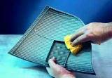
1- Çoðaltýlmasý istenen
bir otomobil far kapaðý modeli, silikon kalýplama hazýrlýðý
için öncelikle temizlenir, gerekirse belli kalýp ayýrýcý
sývýlarla kaplanýr.
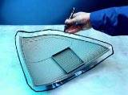
2- Modelin kalýp ayýrma
kenarlarýna þeffaf bant yapýþtýrýlýr ve bantýn kolay görülebilmesi
için keçeli bir kalemle boyanýr.
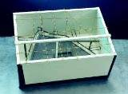
3- Model bir kaba tellerle
askýya alýnarak yerleþtirilir. Hava tahliye kanallarý
bu safhada düþünülerek modele eklenmiþtir.
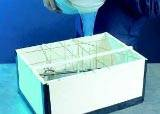
4- Çift komponentli RTV
silikon malzeme model etrafýna dökülür.
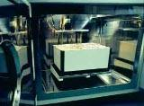
5- Vakum altýnda tutulan
bir fýrýnda hava kabarcýklarý alýnýr ve fýrýn biraz ýsýtýlarak
silikonun daha hýzlý bir þekilde vulkanize (kür) olarak
sertleþmesi saðlanýr.
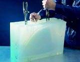
6- Sertleþen silikon
falçata ile kesilir. Bu esnada, 2. safhada yerleþtirilen
kenarý boyalý bant kolaylýk saðlar.
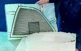
7- Silikon kalýp ayrýlarak
master model çýkartýlýr.
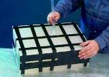
8- Kalýp, döküm için
yeniden kapanýr. Hem ayýrma kolaylýðý hem de silikonun
ömrünü uzatmak için bazý kalýp ayýrýcýlar silikon iç yüzeyine
tatbik edilebilir. Bant kullanýlarak sýkýca parçalar birbirine
baðlanýr.
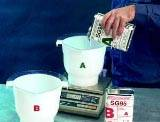
9- Tartýlarak gerekli
ölçüde parça malzemesi birbirine karýþtýrýlýr.
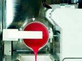
10- Kabarcýklarý önlemek
için bir vakum odasýnda döküm gerçekleþir.
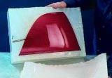
11- Kýsa sürede sertleþen
malzeme silikon kalýptan ayrýlýr.
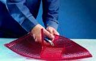
12- Malzeme giriþ ve
hava çýkýþ kanallarýnda biriken sertleþmiþ malzeme kasilerek
parça temizlenir.
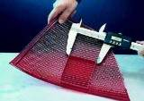
13- Üreim sonrasý hassasiyet
ve tolerans kontrolü yapýlýr.
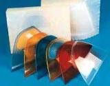
14- Ayný kalýpla üretilmiþ
deðiþik renkte far modelleri
Aþaðýda, Silikon kalýp
kullanýmýna dair diðer örnekler bulunmaktadýr (Ref., MCP):
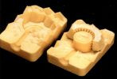Kuyumculuk
sektöründe ise çok daha karmaþýk silikon kalýplar seri
imalatta hassas metal (altýn veya gümüþ) döküm için
mum model üretiminde yaygýn ve etkili bir þekilde kullanýlýrlar.
Solda, bir yüzük imalatýnda kullanýlan çok parçalý karmaþýk
bir silikon kalýp görülmektedir. Yüksek esnekliði, dayanýmý,
uzun ömrü ve düþük maliyeti sayesinde yüksek sýcaklýkta
vulkaniza olan kauçuk kalýplar da kuyumculuk sektöründe
tercih edilmektedir. Bu durumda master yüzük modelinin
basýnç ve sýcaklýða dayanýmlý olmasý gerekir. Ayný zamanda
kauçuk þeffaf olmadýðý için master modelin ayýrma noktalarýný
keserek çýkartmak daha güçtür. (Uygulama
Sahalarý > Kuyumculuk
> Meiko)